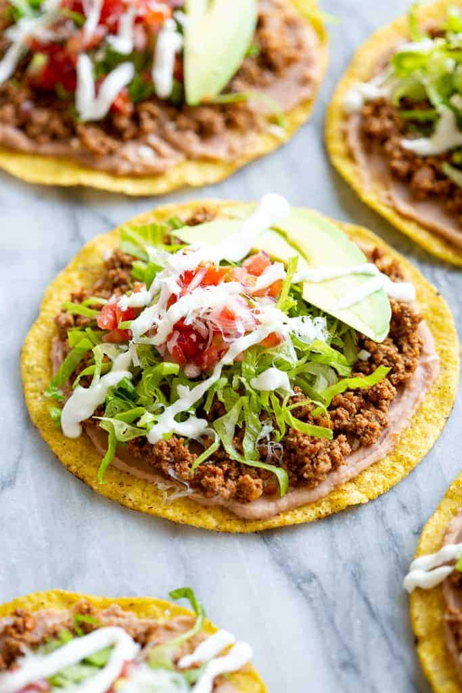

enchiladas

This delicious enchilada recipe made of ancho chiles, cheese and chicken will feed a whole village.
- ¼ cup vegetable oil
- 2 plum tomatoes, cored, seeded, and finely chopped
- 2 jalapeñoes, finely chopped
- 1 white onion, finely chopped
- kosher salt, to taste
- freshly ground black pepper, to taste
- 12 large eggs, lightly beaten
- ¼ cup fresh cilantro, plus more for serving
- 8 tostadas
- 1 ½ cups refried black bean
- ½ cup shredded pepper jack cheese
- sour cream, for serving
- guacamole, for serving
- Preheat the broiler. Line a baking sheet with parchment paper.
- In a large nonstick skillet, heat the vegetable oil over medium-high heat. Add the tomatoes, jalapeños, and onion, and cook, stirring, until soft and beginning to turn brown, about 8 minutes. Season with salt and pepper,
- Add the eggs, reduce the heat to medium, and cook, stirring occasionally, until cooked through, 12–15 minutes. Remove the pan from the heat and stir in the cilantro.
- Arrange the tostadas on the prepared baking sheet and broil, flipping halfway through, until lightly golden and fragrant, about 1 minute total.
- Spread 3 tablespoons of the beans evenly over each tostada. Divide the scrambled eggs among the tostadas, piling them in the center of the beans, then sprinkle evenly with the pepper Jack cheese. Broil until the cheese is just melted, 1–2 minutes.
- Transfer the tostadas to plates and garnish with more cilantro. Serve hot with sour cream and guacamole on the side.
- Enjoy!